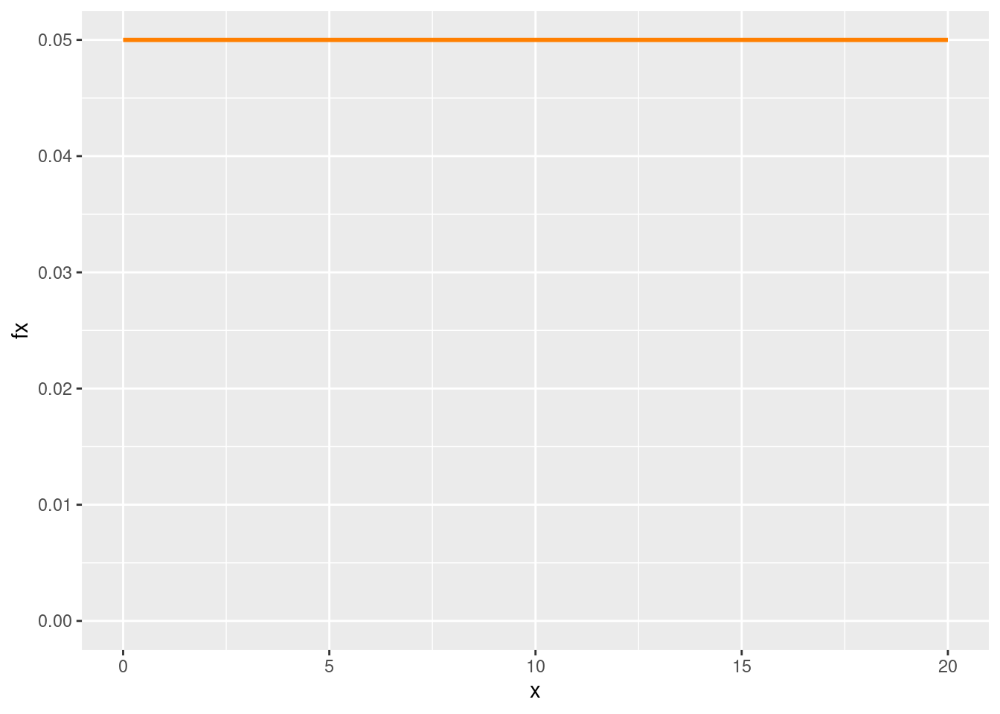
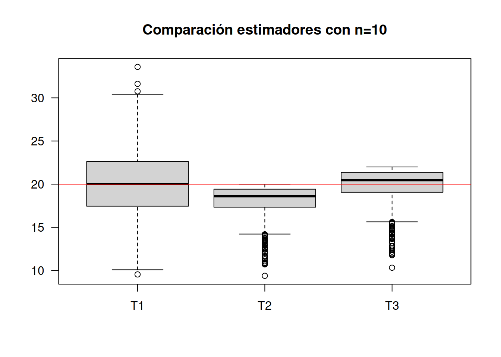
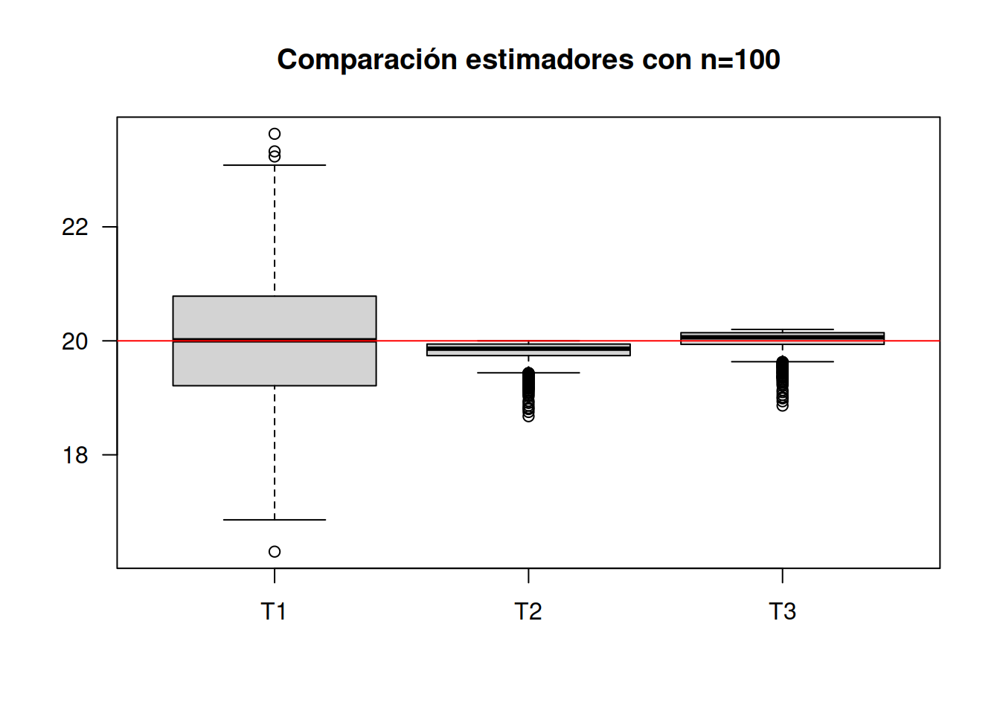
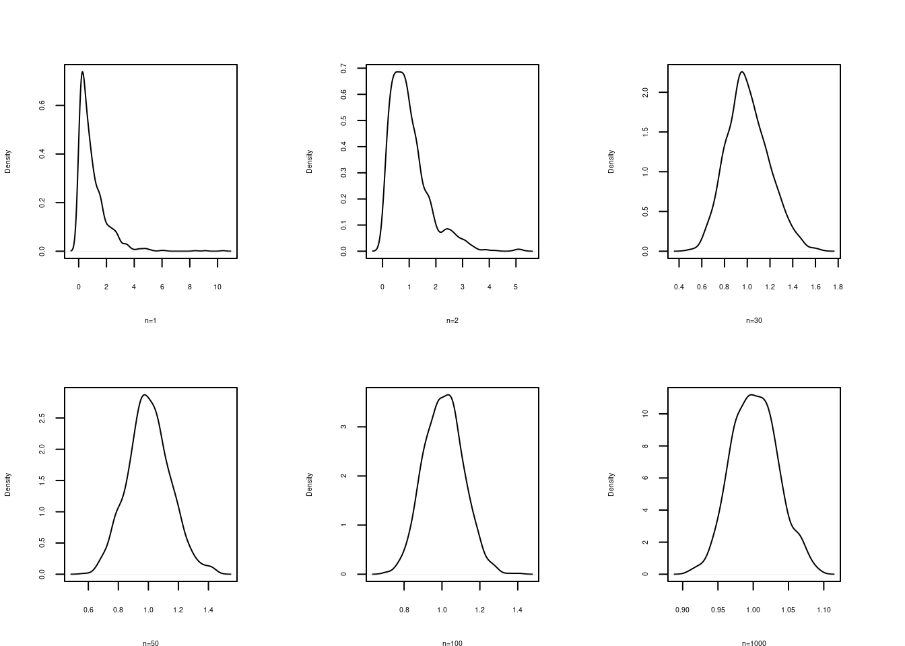
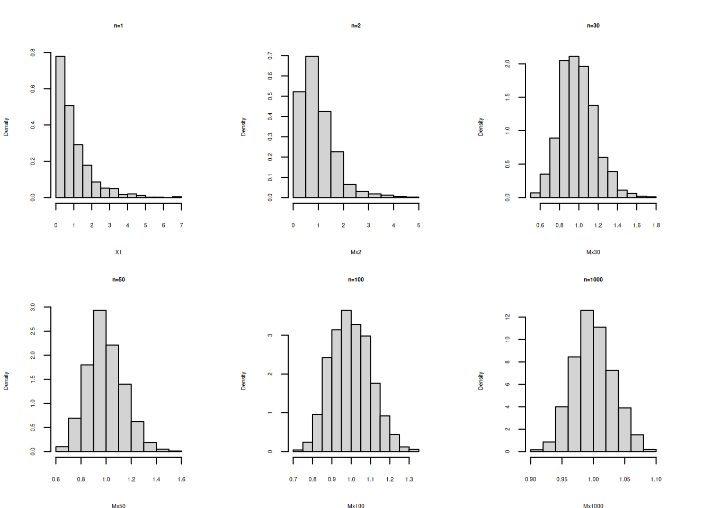
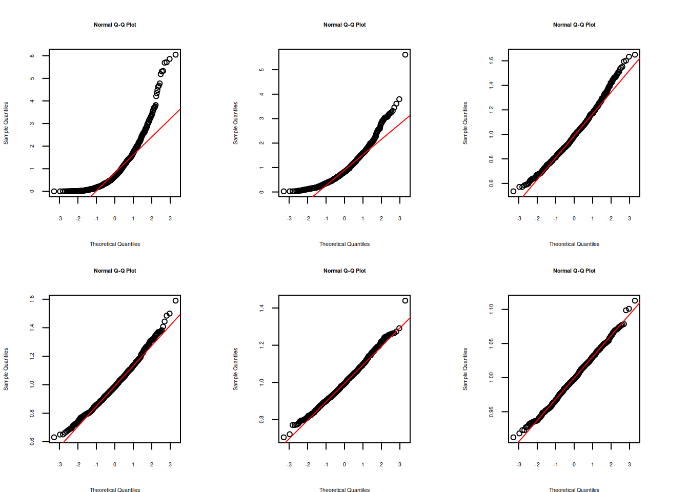

El siguiete problema tiene como objetivo visualizar las principales propiedades de los estimadores : insesgadez, eficiencia y suficiencia. Con este propósito se realizará la simulación de una muestra aleatoria proveniente de una distribución unifirme.
Problema :
Para una variable con distribución uniforme \(X \sim unif(x,a=0, b=20)\) se desea determinar las propiedades de los siguientes estimadores del parámetro \(b\)
\(\widehat{\theta_{1}} = 2 \bar{x}\)
\(\widehat{\theta_{2}} = \max\{x\}\)
\(\widehat{\theta_{3}} = \dfrac{(n+1)}{n} \max\{x\}\)
# uniforme
library(ggplot2)
x= c(0,20)
fx=c(1/20, 1/20)
dat=data.frame(x,fx)
ggplot(data=dat,aes(x=x, y=fx))+
scale_y_continuous(limits=c(0,.05))+
geom_line(size = 1,colour = "#FF7F00") 
Para ello se realiza una simulación, para posteriormente evaluar los estimadores propuestos y determinar sus propiedades.
library(ggplot2)
n=10 # n: tamaño de muestra
m=1000*n # m tamaño de replicas del experimento
Y=matrix(runif(m, min=0, max=20), ncol=n) # matriz de datos m x n
Mx=apply(Y,1,mean) # cálculo de la media para las m muestra
Max=apply(Y,1,max) # cálculo del valor máximo para las m muestras
T1=2*Mx # cálculo de los m valores para el estimador 1
T2=Max # cálculo de los m valores para el estimador 2
T3=((n+1)/n)*T2 # cálculo de los m valores para el estimador 3
T123=data.frame(T1,T2,T3) # data.frame con los tres estimadores data de m x 3
boxplot(T123, las=1, main="Comparación estimadores con n=10") # gráfico de comparación
abline(h=20, col="red") # línea indicando el parámetro b=20
apply(T123,2,mean) # valores de las medias T1 T2 T3
19.97891 18.22164 20.04381 apply(T123,2,sd) # valores de la desviaciones estándar T1 T2 T3
3.624642 1.606142 1.766756 Para un tamaño de muestra n=10 se observa que los mejores resultados se obtienen con T3. Este estimador se puede clasificar como INSESGADO y EFICIENTE, pues ademas que su promedio está muy cerca de 20, tiene la menor varianza
n=100
m=1000*n
Y=matrix(runif(m, min=0, max=20), ncol=n)
Mx=apply(Y,1,mean)
Max=apply(Y,1,max)
T1=2*Mx
T2=Max
T3=((n+1)/n)*T2
T123=data.frame(T1,T2,T3)
boxplot(T123, las=1, main="Comparación estimadores con n=100")
abline(h=20, col="red")
apply(T123,2,mean) T1 T2 T3
20.04272 19.79734 19.99531 apply(T123,2,sd) T1 T2 T3
1.1834828 0.2014654 0.2034800 Los resutados indican que el mejor estimador de b corresponde a T3. Sin embargo el estimador T2 que era insesgado al aumentar el tamaño de la muestra pasando de n=10 a n=100 se observa que su promedio se acerca mas a 20 que corresponde al valor del parametro
El Teorema del Límite Central (TLC) es un concepto fundamental en la teoría de probabilidad y estadísticas. Describe el comportamiento de las sumas o promedios de un gran número de variables aleatorias independientes e idénticamente distribuidas (IID) cuando el número de variables aumenta. En otras palabras, el teorema establece que, bajo ciertas condiciones, la distribución de la suma o el promedio de muchas variables aleatorias tiende a aproximarse a una distribución normal, independientemente de la distribución original de las variables.
El Teorema del Límite Central es importante porque permite inferir propiedades sobre la distribución de una muestra, incluso si la distribución original de los datos no es normal. Esto es especialmente relevante en la estadística, ya que muchos métodos y pruebas estadísticas asumen una distribución normal para funcionar de manera efectiva. El TLC ofrece una justificación teórica para esta suposición en situaciones en las que se cumplan las condiciones necesarias.
Las condiciones para que el Teorema del Límite Central se aplique incluyen:
Verificación del Teorema del Límite Central para una población exponencial con \(\lambda=1\)
Con este fin se siguen los siguientes pasos:
par(cex=0.5, cex.axis=.5, cex.lab=.5, cex.main=.5, cex.sub=.5, mfrow=c(3,2), mai = c(.5, .5, .5, .5))
# Teorema Central del Límite-----------------------------
# Paso 1
n=1000 # numero de columnas (tamaño máximo de muestra)
m=1000*n
# Caso --------------------------------------------------
# distribución exponencial-------------------------------
X=matrix(rexp(m,1),ncol=n) #############################
# Paso 2
# generación de muestras--------------------------------
X1=X[ ,1] # n=1
X2=X[ ,1:2] # n=2
X20=X[ ,1:20] # n=20
X30=X[ ,1:30] # n=30
X50=X[ ,1:50] # n=50
X100=X[ ,1:100] # n=100
X1000=X[ ,1:1000] # n=1000
# Paso 3
# generacion de medias-------------------------------------------
Mx2=apply(X2,1,mean) # medias de muestras de tamaño n=2
Mx20=apply(X20,1,mean) # medias de muestras de tamaño n=20
Mx30=apply(X30,1,mean) # medias de muestras de tamaño n=30
Mx50=apply(X50,1,mean) # medias de muestras de tamaño n=50
Mx100=apply(X100,1,mean) # medias de muestras de tamaño n=100
Mx1000=apply(X1000,1,mean) # medias de muestras de tamaño n=1000
# Paso 4
# generación de densidad empírica -------------------------------
d=density(X1)
d2=density(Mx2)
#d20=density(Mx20)
d30=density(Mx30)
d50=density(Mx50)
d100=density(Mx100)
d1000=density(Mx1000)
# Gráficos de densidad -------------------------------------------
# configuración de las gráficas
par(cex=0.5, cex.axis=.5, cex.lab=.5, cex.main=.5, cex.sub=.5, mfrow=c(2,3), mai = c(.5, .5, .5, .5))
# histogramas de comparacion-------------------------------------
plot(d, main=" ", xlab = "n=1")
plot(d2,main=" ", xlab = "n=2")
#plot(d20, main="", xlab = "n=20")
plot(d30, main=" ", xlab = "n=30")
plot(d50, main=" ", xlab = "n=50")
plot(d100, main=" ", xlab = "n=100")
plot(d1000,main=" ", xlab="n=1000")
# histogramas de comparacion-------------------------------------
hist(X1, main = "n=1", freq=FALSE)
hist(Mx2, main ="n=2", freq=FALSE)
# hist(Mx20, main = "n=20",freq=FALSE)
hist(Mx30, main = "n=30",freq=FALSE)
hist(Mx50, main = "n=50",freq=FALSE)
hist(Mx100, main = "n=100", freq=FALSE)
hist(Mx1000, main = "n=1000", freq = FALSE) 
# histogramas de comparacion--------------------------
qqnorm(X1) ; qqline(X1, col="red")
qqnorm(Mx2) ; qqline(Mx2, col="red")
# qqnorm(Mx20) ; qqline(Mx20, col="red")
qqnorm(Mx30) ; qqline(Mx30, col="red")
qqnorm(Mx50) ; qqline(Mx50, col="red")
qqnorm(Mx100) ; qqline(Mx100, col="red")
qqnorm(Mx1000) ; qqline(Mx1000, col="red")
Se puede observar la convergencia de la distribución de la media muestral a una distribución normal al aumentarse el tamaño de la muestra